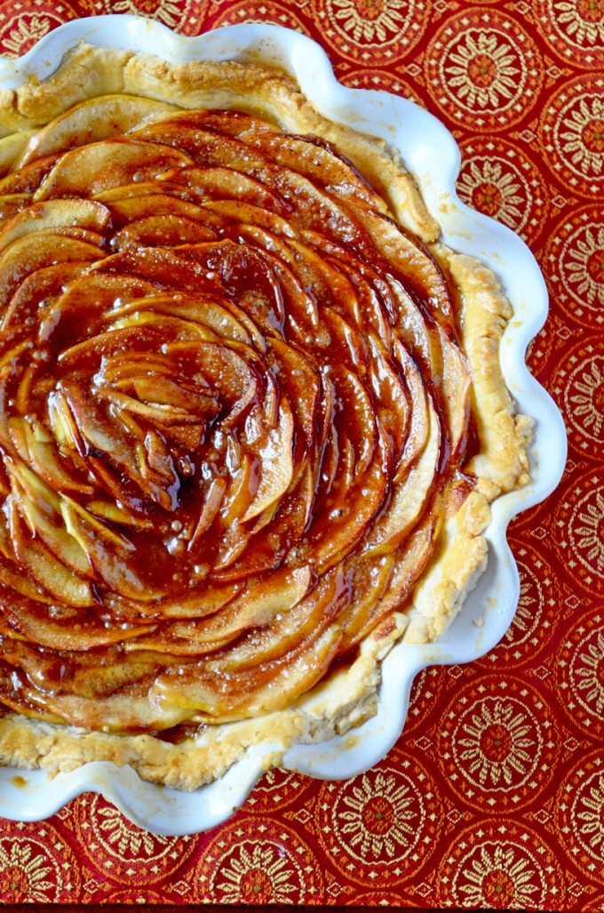

BACK TO MAIN MENU
BACK TO MAIN MENU
Grandma's Rosette Pie

INGREDIENTS
- 1 cup white sugar
- 2 tbsp all-purpose flour
- 3 tbsp cornstarch
- 1/4 tsp salt
- 1 1/2 cups water
- 2 lemons, juiced and zested
- 2 tbsp butter
- 4 egg yolks, beaten
- 1 (9 inch) pie crust, baked
- 4 egg whites
- 6 tbsp white sugar
DIRECTIONS
- In a small saucepan, melt the butter. Add sugar, lemon juice, nutmeg, cloves and cinnamon,
whisk together, and cook for 1-2 minutes until all sugar is dissolved; set aside.
- Prep the crust in a pie dish and preheat oven to 400F. Core the apples, then slice into thin
rounds using a mandolin or knife. Cut the slices in half. Starting from the outside, place the
apples skin side up, one slightly overlapping the next, working your way towards the center in
a clockwise direction. Finish the center with the smallest pieces.
- Pour the sugar & spice filling over the top of the pie. Brush the crush with the beaten egg.
Bake for 25 minutes or until golden. Cool slightly to allow the filling to set, then serve.
This is another third favorite recipe here at Granny's Pies. It has been enjoyed by pie fans for many years. It's Granny's favorite! We hope you'll find that this recipe is delicious and also easy to follow; it's a piece of cake pie!
USER COMMENTS
This is a very fun recipe to follow, because Grandma makes it sweet and simple. This pie is thickened with cornstarch and flour in addition to egg yolks, and contains no milk.
- Emilie S.
Q: What do you call an ape who loves Grandma's pie?
A: A meringue Rosella-utan.
- Vickie K.
This site can really engage my interest. Follow the recipe above and make it so! This pie is number one.
- Jean-Luc Piecard
LINKS
Search for other lemon meringue pie recipes
Home